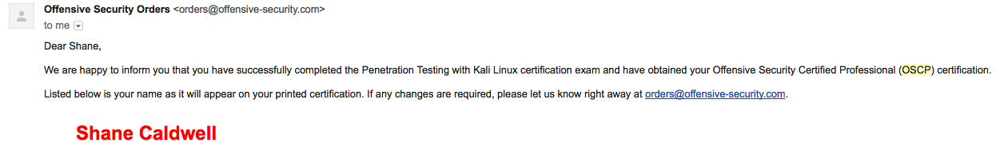

24 hours of being bent over a keyboard, four energy drinks and two microwaveable chicken-fried rices later, I was finally awarded my “Offensive Security Certified Professional”. For those not involved in security, this can be loosely translated to a “hacks real decently” badge.

My friends would agree I’m not a stoic person, but I can count on one hand the number times I’ve been truly, physically, overwhelmed with excitement. When the above email came in at 11am on a workday, I slammed my fist on my office desk and shouted like I’d just scratched a winning lottery ticket. I think I rode that high for a week, and even thinking about it today makes me smile.
What follows is a review of the course that might be valuable for those taking it or who are considering taking it. For those, like me, interested in applying machine learning to the problems of security, I think it’s wise to understand how broad and deep the field is. Many problems I see tackled in academic circles are incredibly far removed from the day to day work, and relatively few so far have been built that can even match a well-done whitelist used for filtering bad traffic. That’s not to say there’s no potential there, I think it’s an issue of engineers not joining forces with the people doing the work, so consider this an attempt to bridge the gap.
- TOC {:toc}
Before you start
The course doesn’t really have pre-requisites. Basically everything you need is available within the course itself. However, the more you know on the way in the easier you’ll be able to focus on the important things. To be ready to take the course, I’d recommend:
A year of scripting experience.
A lot of pentesting is information gathering, enumerating an attack surface. If you do this by hand, one terminal command at a time, you’ll be extremely inefficient and slow. Knowing how to write a little bash or python to script some of this information gathering, and save the results somewhere useful for you to review means you can gather information in the background while you preform useful research on a target. The course teaches you this of course, but if I was experiencing frustrations of learning to program for the first time at the same time I was learning to deploy an exploit, I imagined I’d be incredibly frustrated. When things aren’t working, the first thing you want to do is find a focal point of confusion. What is the thing you’re not understanding causing things to not work the way you hoped they would? The less you really understand, the fewer of those potential focal points you can eliminate, and the more frustrated you’ll be. If you know scripting, you’ll be fairly certain your errors are coming from a lack of understand in the security topic.
A working understanding of unix
I’m not asking you to be a long-beared expert with an arcane understanding of the dark arts. You don’t even have to know whether you want a cron job or a daemon for a long running job. You should, however, be comfortable in a terminal. That’s where you’ll spend 80% of your time if you’re doing your job right and 90% of your time if you’re really getting the hang of it. Sometimes you need a GUI, though. For web testing, there’s no substitute to using a browser and Burp Suite proxy, but you shouldn’t use many more than that.
At first, especially those coming in without a unix background, this will seem unnecesarily abstruse. The more experience you get, the happier you’ll be to find a command line tool where you thought you’d have to use a GUI. The ability to script the command-line tool means that the slightly higher learning curve gives you a massive ROI in time saved. It will take time to get used to but… well, what else is a course for?
The Course
After signing up for the Penetration Testing with Kali Linux Course, you recieve quite a bit of material.
- A PDF filled with course material and associated exercises.
- Course videos, that follows the same subjects as the PDFs.
- An ovpn file and credentials to give you access to the virtual pentesting labs.
I’d been working in the field for a little less than a year when I started the course, meaning I knew incredibly little but thought I knew a lot.
While it’s tempting to just jump into the labs, fire up nmap and Metasploit and see how many boxes you can pop, it’s best to start with the ‘academic’ part of the course. You’re paying for your time with access to the labs, and you want to maximize your productive time in the labs. If you’re not intimiately familiar with the course material provided, you’ll be completely hopeless in the labs. You might get one or two of the easy ones, but this quick progress will slow to a complete crawl
Course Material
The pdf has 18 chapters, each broken down into several sections. Offensive Security begins from the ground up, explaining the fundamental technical skills required to successfully complete a penetration test.
I personally found the written material to be decent. It wasn’t riveting, but it was concise, no-frills, and kept my attention. I would start each module by watching the videos associated with it on 2x speed, giving me a quick “primer” on the material. After that I would read the corresponding PDF chapter and take more careful notes. Offensive Security can be too brief in their covering of some subjects, but thankfully they link to other useful resources. For the student with a spotty experience in some knowledge common for the IT field, reading up on these references is invaluable. Overall, I found it a smart approach to avoid boring old IT pros with things they’ve been working with every day but providing those with less experience (like me!) resources to get up to speed.
For example, I’m a software developer and data scientist by training, and my knowledge of SMB was extremely spotty. I read over every single resource a few times to make sure I understand how this stuff was supposed to work before I attempted to break any of it. In contrast, I only skimmed the web app exploitation section since I did that every day.
A common critique of the course is that the vulnerabilities covered are “too old” and therefore not useful. I think that’s silly. Any course that promised to teach you the latest and greatest in common vulnerabilities would be out of date before it was in print. Offensive Security, more than teaching a specific technique, is attempting to teach the student a useful methodology that will remain effective regardless of the technology in use.
It doesn’t matter that you won’t be able to get root using memodipper on many modern techniques. The point is you understand that taking the time to enumerate the linux kernel version in use on a target machine and searching Exploit DB for vulnerabilities is a step that can’t be skipped. Those looking for silver bullets won’t find them here, but it’s this cycle of exploitation and patching that leads to interesting work for researchers, and an ever-changing day job for pentesters.
Another pointer here - do all the exercises in the PDF as soon as you run into them. A full write-up of all exercises (along with a write-up of 10 rooted lab machines) can give you five bonus points on the exam. Whether you need it or not, the act of doing the exercises and writing them up are excellent preparation and going into the exam later with these writeups done will be a confidence booster. Also, if you fail by 5 points you’ll feel incredibly dumb.
They also reinforce the concepts you’re learning in the videos. As things get technical, it’s easy for your eyes to glaze over and feel like you’re “making progress” just because you’re further in the course material than you were when you started. This doesn’t imply that the material has gotten through, though. If you can do the exercises without referencing the material, you’re in great shape. If you find yourself trying to copy and paste snippets out of the PDF, you need more drilling. The importance of a solid grasp of the fundamentals simply cannot be overstated. Without a working intuition of the basics, you’ll never be able to move onto the creative applications of those basics that form the cornerstone of your growth throughout the course.
As an aside: At least when I took the course, the PDF and videos appeared to have started to drift apart in content in certain places. Command line syntax might be modified in one compared to another, for example. The PDF is probably updated more regularly, so that’s what I would focus on if the two differ. This wasn’t common and didn’t make my time with the material any harder, but it could be a timesuck if you weren’t paying attention.
I was very luck that my employer allowed me a week of paid time to work on the course, and I was able to work through all the material in about four days. If you’re doing this before or after working a full-time job, I could see it taking around two weeks to do correctly.
That, unfortunately, is the easy part.
The Labs
The hard part is the shining jewel of the course. The lab. The lab network contains around 50 different hosts, each vulnerable to exploitation. Beyond knowing that getting root access to each machine is possible, you’re not given any more leads than that. Some machines are require previous access to other machines in order to pivot to new machines. Some machines are not initially unlocked, but you can use exploited hosts on the first subnets to get to others.
And that’s it.
This is where a lot of self direction is required. Confidence sky-high after finishing the course material, your first 5-10 boxes will likely take little effort. A brief port scan, googling some vulnerabilities, load up a Metasploit module, and you’ve got SYSTEM/root.
‘Wow!’, you might think, naively. ‘This course is way easier than everybody said. I must be some kind of hacking prodigy, this will be a piece of cake!’
It will not be a piece of cake.
Poking at boxes will seem to become instantly less productive. The lower hanging fruit has dried up. Every click-to-exploit vulnerability you know from metasploit has been used. Now what? In my opinion, this is where the rubber meets the road in terms of learning the skills required. Mostly you just choose a target machine and sit with it for awhile. Find what services are listening. What software is running the service, what version of the software is it? Can I access filed on this server unauthenticated? Are there any hidden directories on the web server with apps that aren’t clear from the front page? Did I not actually do a full port scan (UDP too, you cretin!) and miss something?
Usually the answer is yes, you did miss something obvious. And finding this out after banging your head against the wall will mean you learned something. You’ll constantly find that when you’re stuck, there’s some assumption you’re making that’s unfounded. If you check your premises, you’ll find the gap. For example, if you assume “I already looked through the web server, there’s nothing there” without looking at the source code of index.html or robots.txt, you might lose hours to that failed premise. That’s good! This will help you add these things permanently to your inner checklist. And that same painful lesson will repeat itself over all types of things.
Better still, you’ll start scripting the things you do most often so you don’t have to do them again. As good as you might be at keeping a checklist, a well-written script will save you tons of time by letting you know with confidence you’ve enumerated a certain part of a host.
After awhile, I started to develop a sense of where to look on servers to find flaws. Even when there was no obvious exploit, I had an idea of “usual suspects” based on open services. Once again, boxes started to fall easily and machines that had left me scratching my head now looked like low hanging fruit. At this point, I felt ready to take a swing at the exam. I had root on around 30 machines at this point, though someone people do as few as 15 before the exam. Some people get all of them! Many people who’ve completed the certification have commented on the development of the “sense” being what mattered, and I agree with them. There’s no magic number.
While I would’ve loved to keep playing in the lab indefinitely, I didn’t want to keep paying for lab access. Also, at this point the class had taken my nights and weekends for going on six months, and my girlfriend was getting tired of me blowing off everything else for the sake of the exam. So, for the sake of love and reclaiming a little free time, I scheduled my exam date.
At this point, I had already completed my lab writeups and exercises. But make sure you read Offensive Security’s notes here! I forgot to capture certain screenshots that were necessary documentation and ended up spending my last study days running through the boxes previously exploited from the top to make sure all my work would be accepted.
This was a pain. Don’t be like me! Read the documentation early. Also the “rules” can change, so don’t take what I wrote here as gospel. I found out the writeups and lab exercises now only counted for 5 points (as opposed to 10) right before my exam started. This was a stressful and demoralizing realization to have, and could’ve been solved by just. Reading.
The Exam
The exam is pretty intense. You will recieve an email from Offensive Security with an exam guide and VPN access to an exam network. This exam network has a variety of machines that need to be compromised within 24 hours. The constraint here isn’t so much that the machines are really difficult - if you’ve gone beyond the low-hanging fruit in the labs, you will have seen items of similar difficulty.
The biggest problem is the time constraint. In the labs, you have the ability to get frustrated with something, leaving it alone, and have fresh eyes to get root where you couldn’t before. No such luck here. To get through this, you’ll want to have your enumeration down to a science and have a solid bag of tricks to rely on. Personally, I had to explain to my housemates and girlfriend beforehand to just… leave me alone for 24 hours. I had a near lethal amount of caffeine on hand, and had zero obligations for the next 72 hours. You should do the same, if you can.
Stick to the schedule you set for yourself before the exam starts. I had been keeping up with the Offensive Security twitter, and someone who had recently completed their OSCP shared their schedule they had made with the iOS app Timer Free. This allows you to block your time, and specify how long you intend to spend with a target in advance. Without this, it’s easy to just forget to take breaks. The timer keeps you honest, and avoids timesinks that aren’t productive.
In theory, that is. My exam was going great, until I missed a checkmark - I wanted my 3rd root before I got any sleep, and it wasn’t coming. I skipped my scheduled four-hour nap time because I was certain I’d have it any minute now. This actually didn’t get me any more points, but it did make the next day of reporting incredibly painful. So plan to sleep. And stick to the plan!
The Report
After finishing your exam, you have an additional 24 hours to fill out the report. This involves documenting the vulnerabilities you discovered on each host, as well as a step by step path to exploiting them. This means screenshots as well! I took a completely ludicrous amount of screenshots through the exam. I didn’t sort them at all, so I was searching through a huge amount of material trying to find screenshots I knew I’d taken. Take the time to name them and place them in folders relevant to eac host as you go.
This will help you to quickly determine whether you got all the screenshots you needed before you lose lab access. Trust me, you don’t want to pull off an awesome exploit but lose points because of poor documentation, or a missing screenshot.
Keep the writing professional as well. You’re going to be tired from your last night of work, but you can’t skip spellcheck. If you go on to pentest professionally, being “tired” doesn’t fly as an excuse for sloppy work, and it won’t fly here other. Remember, Offensive Security is judging you by your value as a penetration tester. A tester who can’t professionally and concisely convey security concepts to a client won’t last long in the field, and Offensive Security keeps this in mind when determining a pass or fail.
The results
Fortunately, I only had to bite my nails for around a day before I got my results. Slightly less than 24 hours before I submitted my exam results, I had an answer in my inbox.
Closing Thoughts
While I took the exam as a pentester, I’m not in the field anymore. These days I’m a data scientist, using deep learning to engineer predictive models. My hope is to apply machine learning to infosec, particularly pentesting, and create tools practicioners will find invaluable. More ambitiously, I hope to design and create an agent that can attack or defend autonomously, without the need for human intervention. It’s a thorny problem fraught with complications, but better to fail at an interesting problem and learning something than easily succeed with a boring one.
Reinforcement learning tells us that to train an agent, you need an environment the agent can percieve, take actions in response to, and observe the results of those actions. For Go, or Chess, these environments are obviously the boards, and the action space is a legal move of the game. What about pentesting? The course reinforced to me how huge the environment problem will be. Pentesting is complex, and abstracting it into an environment that is close enough to real for skills the agent learns to be relevant to real life, but constrained enough for the agent to make progress is difficult. The action space is huge, the environment has a variable (but definitely pretty high) dimensionality. Can’t say I know how to proceed, but people felt the same way about Go for a long time.
Still, I think it’s obvious that the best tools are made by folks who would use them. Many would-be Jobs and Zuckerbergs attempt to solve problems they don’t really understand with an eye to their presumptive valuation. In my experience this leads to tools that don’t really serve anyone built by people who aren’t very excited about them. It’s a lot of work, but I think if you’re going to make a useful tool for a field, you should strive to be at least a knowledgable amateur about it. You at least have to know enough to understand the real domain experts.
I don’t think taking a single exam made me an expert that can build tools for hackers. That will take more work on my part, perhaps some follow up courses and people in security willing to engage with me. But taking the course broadened my horizons and understanding of what hacking entails, and hopefully will make me capable of communicating with the domain experts I want to collaborate with. I’m also insanely proud to have completed the course!